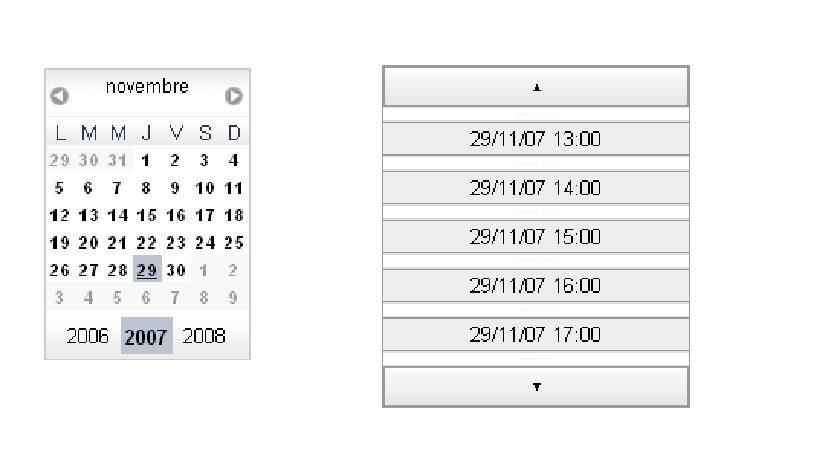
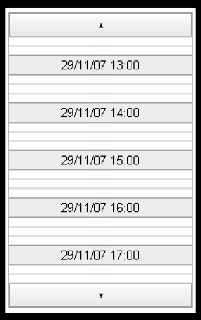

2.2.7 The BasePicker, TimePicker and DatePicker components.
Tatami offers components allowing the selection of dates or time easily. The
DatePicker allows the selection of date within a calendar, whereas the time picker
allows the selection of time within a time table. These two components are
implementations of the abstract class BasePicker which introduces a common API for
components allowing date or time selection.

As for all components in Tatami, it is the addition in the navigator who allows
showing components.
2.2.7.1 Create a TimePicker
To create a TimePicker component, you need to specify 3 parameters. These
parameters permit to refine the available times that users can select and also the
format of the time. By default no time is chosen.
To import the component do this:
import com.objetdirect.tatami.client.TimePicker;
Below you see the details of the parameters which can be passed to the
constructor.
-
startDate:
- The “minimum” date that a user can select.
-
endDate:
- The “maximum” date that a user can select.
-
constraints:
- A TimerPickerConstraint to specify the selectable time and the
format of the time to select.
There are also two others constructor, to simplify the use of the TimePicker
component.
A constructor with no parameter, there are no time restriction and the style of
the TimePicker is like that:

You see 5 hours and these hours are split every 15 minutes. In the second
constructor you just specify the constraints.
The TimerPickerConstraint is a class with four public attributes to determine the
constraints:
-
visibleRange:
- ISO-8601 string representing the range of this TimePicker The
TimePicker will only display times in this range Example: "T05:00:00"
displays 5 hours of options default is "T05:00:00" :
-
clickableIncrement:
- ISO-8601 string representing the amount by which every
clickable element in the time picker increases Set in non-Zulu time, without
a time zone Example: "T00:15:00" creates 15 minute increments. Must
divide visibleIncrement evenly default is "T00:15:00".
-
visibleIncrement:
- ISO-8601 string representing the amount by which every
element with a visible time in the time picker increases. Set in non Zulu
time, without a time zone Example: "T01:00:00" creates text in every 1
hour increment default is "T01:00:00",
-
timePattern:
- TimePattern see the DOJO explanations : it’s like in JAVA for
the most of principals options default is "HH:mm"
The instantiation of a TimePicker is made as follows:
TimePickerConstraints constraints=
new TimePickerConstraints();
constraints.clickableIncrement = TimePickerConstraints.EVERY_HALF_HOUR;
timePicker =
new TimePicker(constraints);
As you can see in the code some constants are defined to simplify the use of the
TimePickerConstraint class.
2.2.7.2 Create a DatePicker
The component DatePicker allows the selection of date, the date to choose can be
bounded by a lower and an upper limit like the TimePicker. It’s possible to not
specify these limits; in that case all possible dates will be effluent. The importation of
the class this fact in the following way:
import com.objetdirect.tatami.client.DatePicker;
To select a Date without constraints, do this:
DatePicker datePicker =
new DatePicker();
To select a Date with constraints do this :
//start2007 correspond to the date : 01/01/2007 //end2008 correspond to 12/31/2008 DatePicker picker =
new DatePicker(start2007, end2008);
2.2.7.3 The API of DatePicker and TimePicker:
The API to manipulate a BasePicker consists in choosing a date in most cases and
recovering this date chosen. The user can choose a date of course by mouse events on
the component.
To set the default selected date and get the date selected by a user:
-
void setDate(Date):
- sets the default selected date
-
Date getDate():
- get the currently selected date
-
void setTime(Date):
- sets the default selected time for a TimePicker
-
Date getTime():
- gets the default selected time for a TimePicker
-
void getMinDate():
- Returns the minimum available date in the calendar or
in the time picker
-
void getMaxDate():
- Returns the maximum available date in the calendar or
in the time picker
-
void addChangeListener(ChangeListener):
- Adds a ChangeListener when
the seletected date value changes.
-
void removeChangeListener(ChangeListener):
- Removes a
ChangeListener when the seletected date value changes.
We can listen to selection changes, by adding a listener of type
com.google.gwt.user.client.ui.ChangeListener to the component.
TimePicker timer =
new TimePicker();
timer.addChangeListener(
new ChangeListener() {
public void onChange(Widget sender) {
Window.alert("New␣time␣:" + timer.getTime() );
}
});
Each times a new time will be selected; an alert will be displayed showing the new
selection.